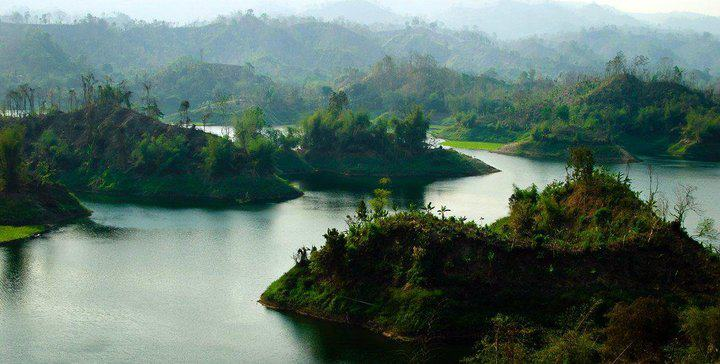
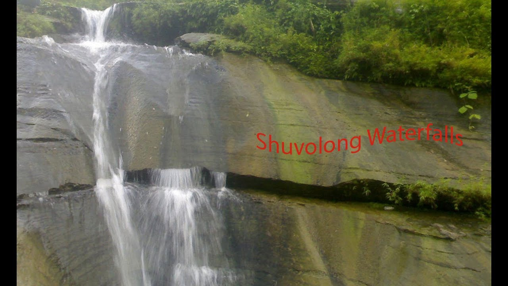
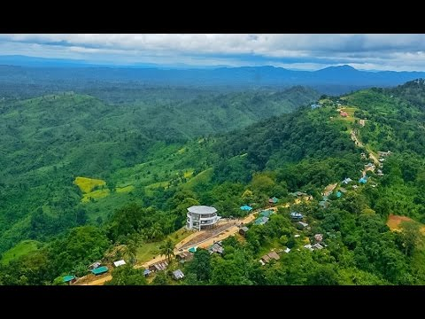
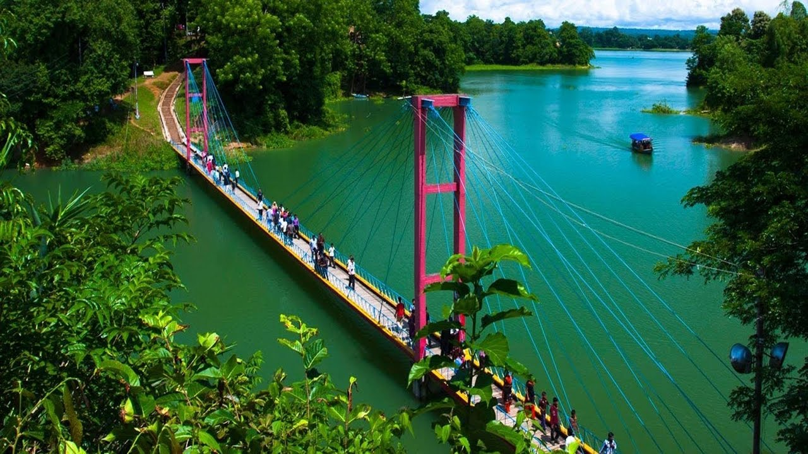

Rangamati, a small town located amongst the green hills, lakes and rivers of the Chittagong Hill Tracts. This is what makes it a prime Bangladesh hill destination. It is known as the Lake City of Bangladesh as this place is located on the bank of the beautiful Kaptai Lake. It is the administrative headquarter of the Rangamati Hill District, the largest district of Bangladesh and located some 77 kilometres away from Chittagong. For long time Rangamati has been a prime Bangladesh tourist destination for its location, scenic beauty, colourful tribal people, tribal homespun textiles and ivory jewellery.
It is known as the Lake City of Bangladesh as this place is located on the bank of the beautiful Kaptai Lake. It is the administrative headquarter of the Rangamati Hill District, the largest district of Bangladesh and located some 77 kilometres away from Chittagong. For long time Rangamati has been a prime Bangladesh tourist destination for its location, scenic beauty, colourful tribal people, tribal homespun textiles and ivory jewellery.
The rich natural resources, diverse flora and fauna makes Rangamati a Bangladesh Eco-Tourism destination. The road leading to Rangamati circles and winds through hilly terrains covered with lush green forests and creates a memorable experience for years to come. A stay here provides a glimpse into the lifestyle of various tribes living there.
The ethnic tribes of Rangamati are the Chakma, Marma, Tonchongya, Tripura, Murong, Bome, Khumi, Kheyang, Chak, Pankhoa, and Lusai. The mix of different races, cultures, religions and customs creates an interesting community at Rangamati. It is said that without visiting Rangamati a tourist will miss a colourful slice of Bangladesh.
Visit Rangamati during October to February as the temperature remains cool and usually there is no rainfall, however, the beauty of Rangamati unleashes during the monsoon as the forest becomes greener, bursts with life and the rivers and waterfalls becomes replenished.
Kaptai lake, beautiful blue watery lake was made by man. The size of Lake is approximately 11000 sq km. You will enjoy the natural beauty of this lake as well as boating on the lake. It is a huge lake and it has some tiny islands. Each island has different name such as “Peda Ting-Ting”, “Tuk-Tuk Echo Village”, “Chang-Pang” etc. “Peda Ting-Ting” is a tiny island and here you will find cottages to stay and enjoy moonlight night with fantastic lake surroundings. “Tuk-Tuk” is an echo park with varities of trees and plants. It is a great place for boating and cruising.
Hanging Bridge is 335 feet long bridge across a portion of the Kaptai lake is an icon of Rangamati. Actually Rangamati is famous for this bridge.It’s really a very beautiful bridge. Every year thousands of people come here to visit this bridge and lake.
There are many bus service available from Dhaka to Rangamati. After reaching Rangamati you can hire an auto-rickshaw to visit the Kaptai lake and Hanging bridge.
Shuvolong a place in Borokol sub district, situated about 25kilometers (11kilometers – as the crow flies) away from Rangamati. There are few waterfalls in Shuvolong zone with the largest one falling from as high as 300 feet. In the past more than a few years, this place has twisted into a tourist journey’s end due to stunning waterfalls and the neighbouring market. Shuvolong is simply easy to get to by rapidity boat or motor boats from Rangamati.
Bangladesh is a pleasing country in the world. There are lots of tourist spot in Bangladesh. Rangamati district is one of them. Rangamati is in the Chittagong division. Shuvolong Waterfalls is a good-looking waterfall in Rangamati. It is the attractive place of Rangamati. The only obtainable path to influence at the waterfall is through water, through the lake. People visit there by boat.
It is a well-known place with the tourists for the waterfall, high hills and the natural neighbouring it offers. This waterfall is just in advance the Shubholong Bazaar. Means from the waterfall, it will take from one place to another 5 minutes to reach at bazaar. So that Shuvolong is with no trouble easy to get to by speed boat or motor boats from Rangamati.
Sajek is a union at Baghaichari Upazila in Rangamati districts. It is one of the big union in Rangamati districts. Basically it is name of a river which separates Bangladesh from India. The river flows into the Karnafuli River in the Chittagong Hill Tracts. Sajek Valley is situated in the North angle of Rangamati, near the Mizoram border boundary area. The valley is 18000 ft high form sea lavel. Many small rivers flow through the hills among them Kachalon and Machalong are famous. It is one of the biggest union in Bangladesh.
The main ethnic minorities on the valley are Chakma, Marma, Tripura, Pankua, Lushai and Sagma. Before traveling there, be alert about malaria. There is some body lotion or cream to prevent the mosquito. The place is known as hill queen for its natural beauty and roof of Rangamati. Marishsha is a name of a place near Sajek Valley. Most of the houses are made by bamboo. There is another place near Sajek, it is Kanlak, and it is famous for orange orchard.
Most attractions of the spot are sun set, rain, morning, evening, and night and aborigine people. Tourist can buy aborigine people product from indigenous Haat. Roads are like big snake spirals mountains. Most of the people are Buddhist and people are Christian here.
A new road has been built up to the Ruilui Para by the guidance of Bangladesh army. On the way traveler need to take permission from the army camp. Bangladesh army is very helpful and cooperative. Now mobile network is available here.
The valley is in Rangamati but tourist can reach there from Khagrachhari too. The route is Khagrachhori – Dighinala Bazaar – Bagaihat Bazaar – Machalong Haat – then Sajek. It is 106 km from Khagrachhari. Dighinala to Sajek is 25 km. Main transportation is Chander Gari. It costs tk.5000-tk.6000/- from Khagrachhari. It is like a four wheel jeep. Some time visitor can take some tea berak on the way at Haat. From Dighinala traveler can hire motor bike. It may cost tk 1000-tk1500/- up down. The region is extremely very backward.
Visitor can also go to Sajek from Rangamati by engine vessel. It takes 5-6 hours. Baghaichari is the landing station. Costing is within tk 200/-. And Baghaichari to Sajek by Chander Gari. Per person it take Tk 300/- Normally it is better to book reserve for return journey.
This 335feet long bridge across a portion of the Kaptai lake is an icon of Rangamati.
It is just 5 kilometer away from Rangamati town. So visitor can hire private jeep or CNG auto rickshaw to go there.
Circuit House
Address: Amanat bagh,Vedvedi Area,Rangamati.
Tel:0351-62304(office);0352-62308(Residence);0351-62240(VIP-1);0351-62081(VIP-2)
E-mail:dcrangamati@moestab.gov.bd
Forest Rest House or BON BIVAG Rest House
Address: Banarupa, Rangamati.
Tel:0351-63351(office);0351-63352(res)
LGED Rest House
Address:T.N.T Area(near Rangamati General Hospital),Rangamati
Tel:0351-63148(office);0351-63252(Res)
USAI Rest House
Address:Amanatbagh, Vedvedi Area, Rangamati
Tel:0351-63389(office);0351-2283(Res)
Zila Parishad Rest House
Agricultural Division (Krishi Bivagh) Rest House
Address: Tribel Adam,Banarupa Area
Tel: 0351-62324(office);0351-66146(Res)
Electircity/Power Development Board Rest House
Address:Champpok nagar, Banarupa
Tel:0351-62288(Office);0351-62253(Res)
BISIC Rest House
Address: Near Rangamati Stadium
Tel: 0351-62037(office)
Parjatan Holiday Complex
Address: Near Boarder Guard Bangladesh(BGB) Sector,Tabalchari Area,Rangamati
Tel: 0351-63126(office)
Hotel Sufia
Address: Kathaltali Area(near Fishery Ghat)
Tel: 0351-61178;0351-62145
Hotel Green Castle
Address: Reserv Bazar Area,Rangamati
Tel: 0351-71214 and 0351-61200
Motel JOJ
Address: College gate,Rangamati
Tel: 0351-63348
Hotel Al-Moba
Address: New Bus Station,Reserv Bazar,Rangamati
Tel: 0351-61959
Hotel Mountain View
Address: Shiddhibhaban (near Burmise Market),Tabalchari Area,Rangamati
Tel: 0351-62748
Mobile: 01553440324
Hotel Dignity
Address: North Kalindipur Area, Rangamati
Tel: 0351-62364
Hotel Shapla
Address: New Court Building Road,Rangamati
Tel: 0351-63235
Both AC and Non AC Bus service is available from both Dhaka and Chittagong to Rangamati.
Dolphin Challenger
11, Fakirpool, Dhaka
Tel: 02-8317557, 8315375
Unique Services
4, Inner Circular Road
Fakirapool, Dhaka-1000
Tel: 02-8123160, 9561252
Shyamoli Paribahan
Arambagh Counter – (+8802) 7194291, 7193910
Asad Gate Counter – (+8802) 9123471, 8124881, 9124514
Darussalam/Technical Counter – 01712-008672
Fakirapool Counter – (+8802) 7193725, 9333364, 7194190, 7195974
Gabtoli New Counter – (+8802) 9014560
Gabtoli Counter (Bus terminal) – (+8802) 8014538, 01711-987028
Kamalapur New Counter – (+8802) 8316246
Kamalapur BRTC office (International) – (+8802) 8360241, 01716-942154, 01711-472297
Kalyanpur Counter – (+8802) 9003331, 8034275
Kolabagan Counter – (+8802) 9141047, 01711-130862
Pantapath Counter – (+8802) 9102082, 01711040881, 01727422045
Syedabad Counter – (+8802) 7540993, 7540991, 7550071, 7541019